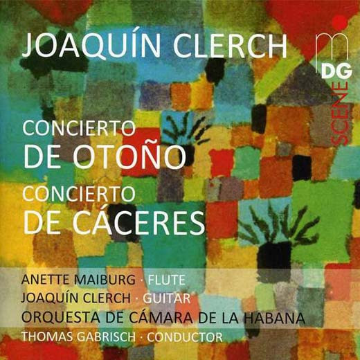

CD
Concertos Joaquín Clerch
Joaquín Clerch, Anette Maiburg, Thomas Gabrisch, Orquesta De Cámara De La Habana
Media: — · Sleeve: —
—
Personal
Discogs SuggestedCA$3.89
Discogs MedianCA$3.89
Discogs HighCA$3.89
- Physical Copy ID
- BB-CD-1587
- Year
- 2012
- Label
- MDG
- Catalog #
- 90361742-6
- Country
- DEGermany
- Genre / Style
- Classical · Concerto